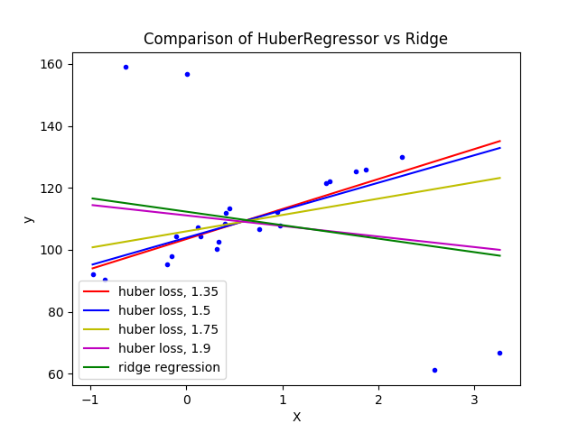

Note
Click here to download the full example code or run this example in your browser via Binder
HuberRegressor vs Ridge on dataset with strong outliers¶
Fit Ridge and HuberRegressor on a dataset with outliers.
The example shows that the predictions in ridge are strongly influenced by the outliers present in the dataset. The Huber regressor is less influenced by the outliers since the model uses the linear loss for these. As the parameter epsilon is increased for the Huber regressor, the decision function approaches that of the ridge.
Out:
# Authors: Manoj Kumar mks542@nyu.edu
# License: BSD 3 clause
print(__doc__)
import numpy as np
import matplotlib.pyplot as plt
from sklearn.datasets import make_regression
from sklearn.linear_model import HuberRegressor, Ridge
# Generate toy data.
rng = np.random.RandomState(0)
X, y = make_regression(n_samples=20, n_features=1, random_state=0, noise=4.0,
bias=100.0)
# Add four strong outliers to the dataset.
X_outliers = rng.normal(0, 0.5, size=(4, 1))
y_outliers = rng.normal(0, 2.0, size=4)
X_outliers[:2, :] += X.max() + X.mean() / 4.
X_outliers[2:, :] += X.min() - X.mean() / 4.
y_outliers[:2] += y.min() - y.mean() / 4.
y_outliers[2:] += y.max() + y.mean() / 4.
X = np.vstack((X, X_outliers))
y = np.concatenate((y, y_outliers))
plt.plot(X, y, 'b.')
# Fit the huber regressor over a series of epsilon values.
colors = ['r-', 'b-', 'y-', 'm-']
x = np.linspace(X.min(), X.max(), 7)
epsilon_values = [1.35, 1.5, 1.75, 1.9]
for k, epsilon in enumerate(epsilon_values):
huber = HuberRegressor(alpha=0.0, epsilon=epsilon)
huber.fit(X, y)
coef_ = huber.coef_ * x + huber.intercept_
plt.plot(x, coef_, colors[k], label="huber loss, %s" % epsilon)
# Fit a ridge regressor to compare it to huber regressor.
ridge = Ridge(alpha=0.0, random_state=0, normalize=True)
ridge.fit(X, y)
coef_ridge = ridge.coef_
coef_ = ridge.coef_ * x + ridge.intercept_
plt.plot(x, coef_, 'g-', label="ridge regression")
plt.title("Comparison of HuberRegressor vs Ridge")
plt.xlabel("X")
plt.ylabel("y")
plt.legend(loc=0)
plt.show()
Total running time of the script: ( 0 minutes 0.168 seconds)